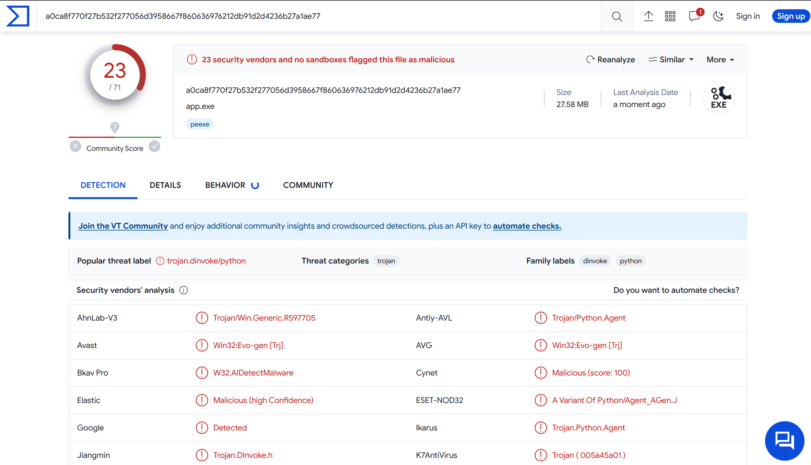
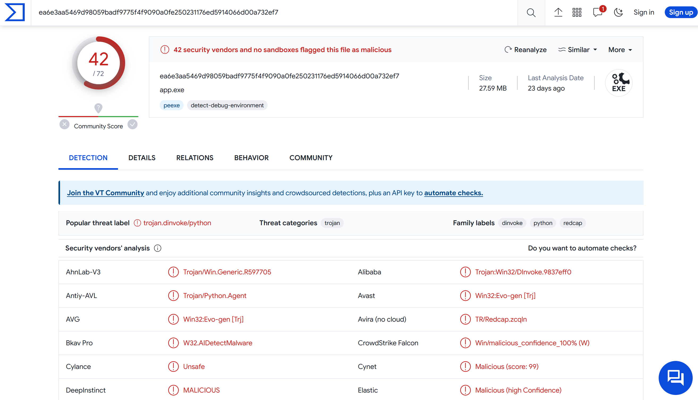
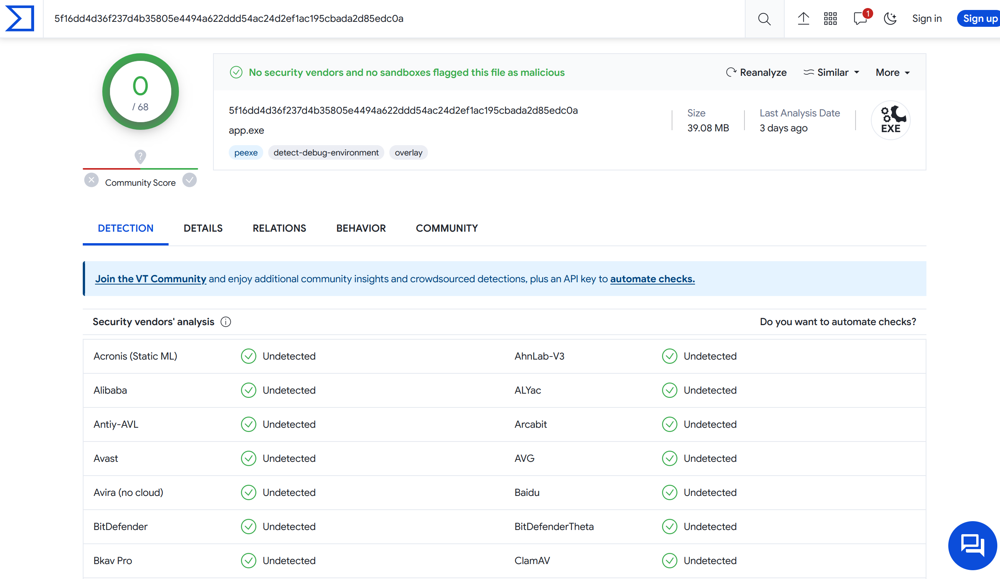
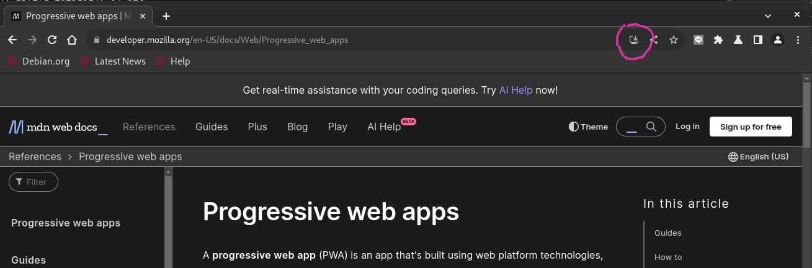
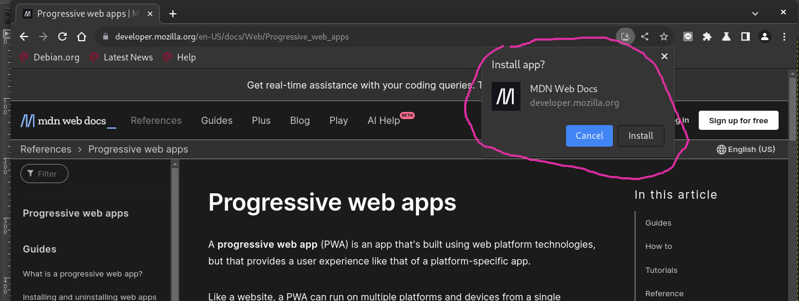
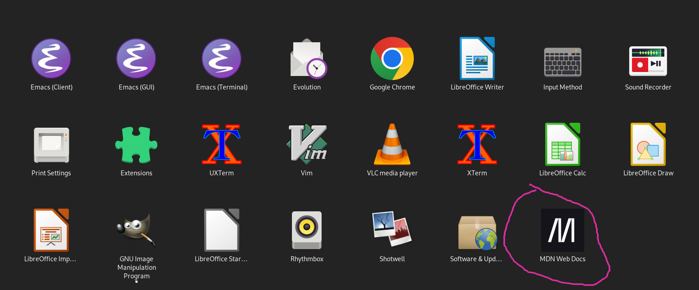
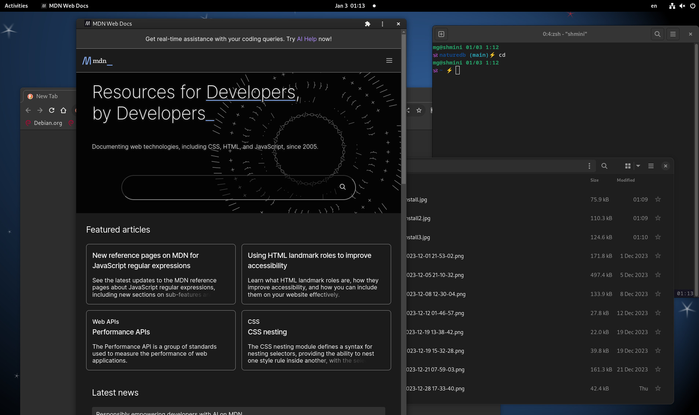
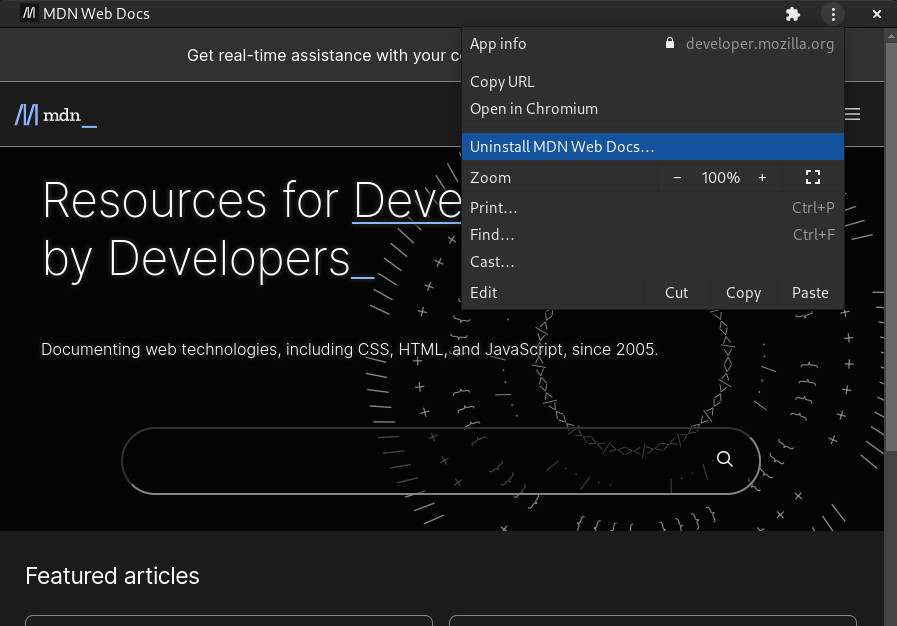
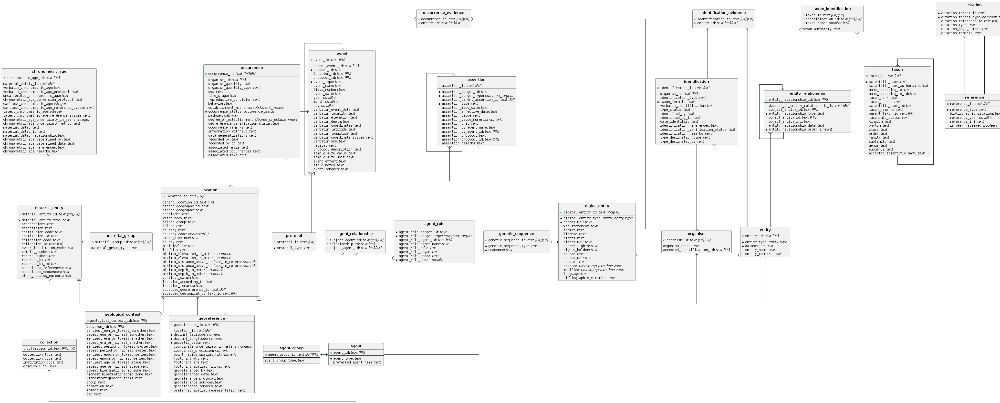

拿到Excel資料是1個欄位，很多列(Row)，要變成1列很多欄(Column)的形狀
先把Excel變成csv (編碼要特別選UTF-8)
然後整裡ChatGPT給我的答案，我只取我容易理解的。
用tr把換行改成逗號，再輸出成output.csv:
裡面還會有Windows的^M換行符號，再用tr去除一次:
tr真好用，懶人的sed。
先把Excel變成csv (編碼要特別選UTF-8)
然後整裡ChatGPT給我的答案，我只取我容易理解的。
用tr把換行改成逗號，再輸出成output.csv:
裡面還會有Windows的^M換行符號，再用tr去除一次:
tr真好用，懶人的sed。
StackOverflow都是說自己build PyInstaller的bootloader可以解決，因此參考: Building the Bootloader — PyInstaller 6.3.0 documentation
試了自己build MinGW，遇到zlib static找不到的問題。
發現這包(WinLibs - GCC+MinGW-w64 compiler for Windows)可以直接使用，方便很多。
(另外也許可以用MSYS2，目前還沒試過)
cd pyinstaller\bootloader 進入bootloader目錄
回到pyinstaller目錄，然後執行
失敗的話換
然後就可以執行pyinstaller指令了
用VirusTotal服務測試
原本預設(pip install)的Pyinstaller:

用另一套Nuitka (先轉成C++，功能強大)，但是也會被誤判。

Custom build PyInstaller的bootloader看起來就好很多了，實際上還需要更多驗證。

有人佛心整理了各家防毒軟體的誤判回報區
Blog說明 How to stop your Python programs being seen as malware | by Mark Hank | Medium
目前使用的Floorp瀏覽器更新，提到這次更新支援Windows的PWA（Progress Web App）跟SSB（Site-specific browser）。好奇去看了一下Floorp blog對PWA的介紹Floorp のプログレッシブウェブアプリの機能と仕様 | ABlog，內文用MDN這個開發網頁常需要查找資料的網站來當例子，原來PWA在瀏覽器上安裝後，在系統的應用程式圖示裡就真的會有一個新的Icon跑出來，執行的話就像是特別開一個網頁的應用程式。
引起我的興趣，我之前一直以為PWA跟RWD（Responsive Web Design）差不多，只是過幾年固定會出現的技術Buzz Word，原來他真的是接近原生App那樣的執行，操作界面在各種多到爆炸的前端工具/框架的網頁世界裡，開發起來真的是方便很多，還有service workers可以支援離線，雖然我覺得比起Native App還有很多先天無法克服的，但是已經是從網頁、網頁的擴充功能（extension）那邊跨出很大的一步了，想到一些之前開發桌機App考慮用到類似Electron的工具，現在知道了PWA，還有另一種不同的選擇了。
目前Floorp只支援Windows，試試看Linux(Debian 12 Bookworm)的Chromium，也是可以安裝。


應用程式區有Icon了

執行起來長這樣

可以uninstall

除了上面提到的MDN，還有Spotify, Uber, Pinterest... 也都有做PWA。
LSB (Linux Standard Base)，Linux Distribution版本，代碼等基本發布訊息
一句話說出Linux發布系統跟版本
Debian 9以後，除了基本訊息，還有一些不知道可以做什麼的 URL
hostnamectl就像"關於我的電腦"，包含一些有用的硬體訊息
但如果要知道minor version的話就要看
看到一個schema.sql，為了要讓大家快速理解而又不用直接看SQL語法性，還是看Entity Relationship Diagram (ER模型) 比較方便。通常功能強大、有UI界面的Database client都有這樣的功能，但是我懶得在本地電腦架設資料庫，還要安裝華麗的pgAdmin或是DBeaver之類的，而且想到要設定權限、網路之類就覺得會很很麻煩。
於是google了一下，看到N種處理的方法，有Docker的優先，隨便看了一個github 專案：moe-protagonist/postgres-plantuml-erd-docker: Dockerfile for creating ERDs with PlantUML，似乎方便，把專案clone下來後，照他寫的說明，果然就成功產生圖片了，真的讚。
$ docker build . -t moea/erd
$ id=$(docker create moea/erd)
$ docker cp $id:/erd/schema.png .
$ docker rm -v $id
$ open schema.png
(原始文件的docker cp那句少了一個 :)
按照說明檔測試成功後，把sql目錄裡的schema.sql換成我的，然後照說明從docker build再重跑一次，就產生我要的圖檔了，真的很不費心力。
用這個 schema.sql 產生出以下圖檔。

原本文件提供的是docker指令，這邊轉成docker compose方便把設定記錄起來，測試的網址也可以用 .env 檔設定
version: '3'
services:
zaproxy:
image: ghcr.io/zaproxy/zaproxy:stable
volumes:
- ./:/zap/wrk/:rw
command: zap-baseline.py -t ${TEST_DOMAIN} -g gen.conf -r ${TEST_REPORT_FILENAME}.html
執行 docker compose up 就可以了，之後也可以加到自動測試流程裡，透過docker networks直接掃開發版。
不知道在那邊看到Sidekick Browser這個強調高生產力的瀏覽器，引起我的興趣，我使用Vivaldi/Opera已經很長的時間了，Chrome一直要人登入很煩，Firefox很沒有特色，我突然也想到前陣子看到的Arc瀏覽器，突然就想來試用一下各種新的瀏覽器。